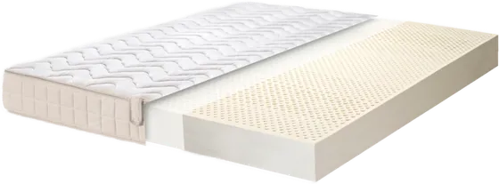
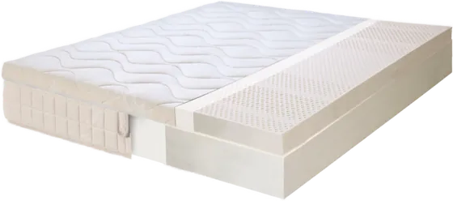
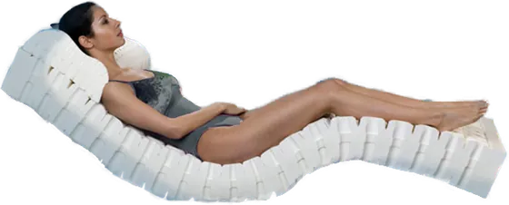
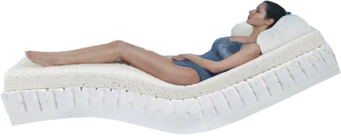
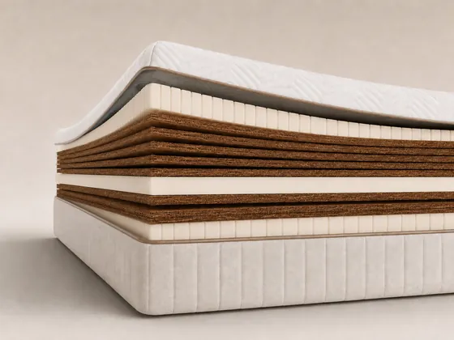
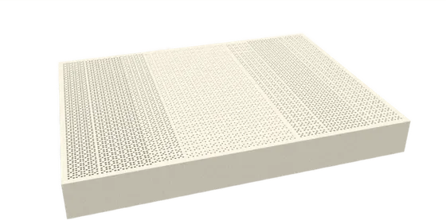
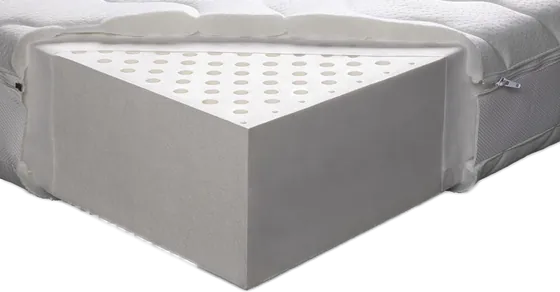
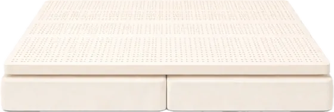

<!-- Divine DunlopDreams Collection 1.0.0 · mattress · generated by divine-collection/build.mjs: edit src/data.mjs, not this file -->
<div class="ddc ddc--mattress">
<div class="ddc__in">
<div class="ddc__hd">
<p class="ddc__eye">Latex Mattresses Collection</p>
<h2 class="ddc__q">Which 100% latex mattress is right for you?</h2>
<p class="ddc__lede">Eight latex mattresses, one material family: natural Dunlop latex. Each model exists for a reason. Find yours, then set its size, firmness, depth and cover on its own page.</p>
<ol class="ddc__path"><li class="ddc__st ddc__st--now"><span class="ddc__st-n">1</span><span class="ddc__st-x"><span class="ddc__st-t">Pick your model</span><span class="ddc__st-w">here</span></span></li><li class="ddc__st"><span class="ddc__st-n">2</span><span class="ddc__st-x"><span class="ddc__st-t">Set size, firmness, thickness &amp; cover</span><span class="ddc__st-w">on the model page</span></span></li><li class="ddc__st"><span class="ddc__st-n">3</span><span class="ddc__st-x"><span class="ddc__st-t">Buy</span><span class="ddc__st-w">on the model page</span></span></li></ol>
</div>
<div class="ddc__body">
<div class="ddc__map">
<p class="ddc__map-h">The latex mattress collection, by family</p>
<div class="ddc__fam ddc__fam--classic"><h3 class="ddc__fam-h"><span class="ddc__fam-n">Classic Premium &amp; Essential</span></h3><ul class="ddc__rows"><li class="ddc__row ddc-m-botanic"><a class="ddc__ra" href="https://divinedunlop.com/products/botanic-100-organic-latex-mattress-dunlop-technology-831592302"><span class="ddc__rn">Botanic</span><span class="ddc__rd">One clear firmness, four levels</span></a></li><li class="ddc__row ddc-m-botanic_dp"><a class="ddc__ra" href="https://divinedunlop.com/products/botanic-dual-plush-100-organic-latex-mattress-organic-latex-topper-dunlop-technology"><span class="ddc__rn">Botanic Dual Plush <span class="ddc__dp">Dual Plush</span></span><span class="ddc__rd">Latex mattress + separate latex topper</span></a></li></ul></div>
<div class="ddc__fam ddc__fam--innov"><h3 class="ddc__fam-h"><span class="ddc__fam-n">Innovative Premium Comfort</span></h3><ul class="ddc__rows"><li class="ddc__row ddc-m-bio"><a class="ddc__ra" href="https://divinedunlop.com/products/bio-comfort-100-organic-latex-mattress-innovation-cloud-comfort"><span class="ddc__rn">Bio Comfort</span><span class="ddc__rd">7-zone capsule core, Cloud Comfort</span></a></li><li class="ddc__row ddc-m-bio_dp"><a class="ddc__ra" href="https://divinedunlop.com/products/bio-comfort-dual-plush-100-organic-latex-mattress-innovation"><span class="ddc__rn">Bio Comfort Dual Plush <span class="ddc__dp">Dual Plush</span></span><span class="ddc__rd">Capsule latex mattress + plush topper</span></a></li></ul></div>
<div class="ddc__fam ddc__fam--ortho"><h3 class="ddc__fam-h"><span class="ddc__fam-n">Orthopaedic Firmness</span></h3><ul class="ddc__rows"><li class="ddc__row ddc-m-ortho"><a class="ddc__ra" href="https://divinedunlop.com/products/orthopaedic-coconut-coirs-100-organic-latex"><span class="ddc__rn">Orthopaedic Coconut Coir</span><span class="ddc__rd">Extra Firm, stabilised with coconut coir</span></a></li></ul></div>
<div class="ddc__fam ddc__fam--value"><h3 class="ddc__fam-h"><span class="ddc__fam-n">Best Value</span></h3><ul class="ddc__rows"><li class="ddc__row ddc-m-ambient"><a class="ddc__ra" href="https://divinedunlop.com/products/ambient-best-price-100-natural-dunlop-latex-mattress"><span class="ddc__rn">Ambient</span><span class="ddc__rd">Optimised latex density, best value</span></a></li><li class="ddc__row ddc-m-hotel"><a class="ddc__ra" href="https://divinedunlop.com/products/hotel-line-optimised-value-100-dunlop-latex-mattress"><span class="ddc__rn">Hotel Line</span><span class="ddc__rd">Shredded latex core, for hospitality</span></a></li></ul></div>
<div class="ddc__fam ddc__fam--partners"><h3 class="ddc__fam-h"><span class="ddc__fam-n">Partners</span></h3><ul class="ddc__rows"><li class="ddc__row ddc-m-partners"><a class="ddc__ra" href="https://divinedunlop.com/products/latex-mattress-for-partners-organic-latex"><span class="ddc__rn">Mattress for Partners</span><span class="ddc__rd">Two mattresses, one shared topper</span></a></li></ul></div>
</div>
<div class="ddc__stage">
<article class="ddc__pv ddc__pv--intro">
<p class="ddc__k">The collection at a glance</p>
<h3 class="ddc__pv-h">5 answers, 8 latex mattresses</h3>
<ul class="ddc__fams"><li class="ddc__fs ddc__fs--classic"><span class="ddc__fs-s">The classic premium solution</span><span class="ddc__fs-n">Classic Premium &amp; Essential</span><span class="ddc__fs-m">Botanic · Botanic Dual Plush</span><span class="ddc__fs-l">Our original organic Dunlop latex: one clear firmness, or Dual Plush when you want two.</span></li><li class="ddc__fs ddc__fs--innov"><span class="ddc__fs-s">The innovative comfort solution</span><span class="ddc__fs-n">Innovative Premium Comfort</span><span class="ddc__fs-m">Bio Comfort · Bio Comfort Dual Plush</span><span class="ddc__fs-l">A cellular-capsule latex core for Cloud Comfort and the highest ventilation in our range.</span></li><li class="ddc__fs ddc__fs--ortho"><span class="ddc__fs-s">The firmer orthopaedic solution</span><span class="ddc__fs-n">Orthopaedic Firmness</span><span class="ddc__fs-m">Orthopaedic Coconut Coir</span><span class="ddc__fs-l">Extra Firm latex stabilised with coconut coir, with two firm sides.</span></li><li class="ddc__fs ddc__fs--value"><span class="ddc__fs-s">The best-value solution</span><span class="ddc__fs-n">Best Value</span><span class="ddc__fs-m">Ambient · Hotel Line</span><span class="ddc__fs-l">Optimised 100% latex: Ambient for the home, Hotel Line for hospitality.</span></li><li class="ddc__fs ddc__fs--partners"><span class="ddc__fs-s">The solution for partners</span><span class="ddc__fs-n">Partners</span><span class="ddc__fs-m">Mattress for Partners</span><span class="ddc__fs-l">Two individually regulated latex mattresses under one shared topper.</span></li></ul>
<div class="ddc__dpx"><span class="ddc__iso" aria-hidden="true"><span class="ddc__sl ddc__sl--bot ddc__f--m"></span><span class="ddc__sl ddc__sl--top ddc__f--s"></span></span><div><p class="ddc__dpx-h">What “Dual Plush” means</p><p class="ddc__dpx-p">A latex mattress for the main support, with a separate latex topper above it for comfort and adaptation. The two are chosen together and work as one sleep system.</p></div></div>
<ul class="ddc__prs"><li class="ddc__pr"><b>Pure latex sleep systems.</b> No springs, no memory foam, no synthetic foam core.</li><li class="ddc__pr"><b>Layers with a job.</b> Where a model has layers, they regulate support, comfort and adaptation inside the latex system.</li><li class="ddc__pr"><b>Made to order.</b> Every model is built to the size, firmness, depth and cover you confirm.</li></ul>
<p class="ddc__pick">Choose a model to preview</p>
</article>
<article class="ddc__pv ddc-m-botanic ddc-f-classic" hidden>
<div class="ddc__pv-top"><p class="ddc__crumb"><span class="ddc__crumb-f">Classic Premium &amp; Essential</span></p>
<h3 class="ddc__pv-n">Botanic</h3>
<p class="ddc__pv-t">The classic premium latex mattress</p>
<p class="ddc__what">100% organic Dunlop latex with a seven-zone anatomical map, made in one firmness chosen by your own body weight.</p>
<figure class="ddc__fig"></figure></div>
<div class="ddc__facts"><div class="ddc__fact"><p class="ddc__fact-k">Why it exists</p><p class="ddc__fact-v">It is our original line: a dense, solid latex feel and a precise balance between adaptation and support.</p></div><div class="ddc__fact"><p class="ddc__fact-k">Who it suits</p><p class="ddc__fact-v">Sleepers who know the one firmness they need: Soft, Medium, Firm or Extra Firm.</p></div><div class="ddc__fact ddc__fact--vs"><p class="ddc__fact-k">How it differs</p><ul class="ddc__vs"><li><b>Botanic Dual Plush</b> combines two firmnesses when you are between two levels.</li><li><b>Ambient</b> uses a lighter latex density at a more accessible price.</li></ul></div></div>
<div class="ddc__spec"><div class="ddc__sp"><p class="ddc__sp-h">Firmness</p><p class="ddc__fz"><span class="ddc__f ddc__f--s">Soft</span> <span class="ddc__f ddc__f--m">Medium</span> <span class="ddc__f ddc__f--f">Firm</span> <span class="ddc__f ddc__f--x">Extra Firm</span></p></div><div class="ddc__sp"><p class="ddc__sp-h">Depths</p><p class="ddc__dl"><span class="ddc__d">20 cm</span> <span class="ddc__d">24 cm</span> <span class="ddc__d">26 cm</span></p></div><div class="ddc__sp ddc__sp--b"><p class="ddc__sp-h">Construction</p><p class="ddc__build">100% organic Dunlop latex · 7-zone anatomical map</p></div></div>
<p class="ddc__acts"><a class="ddc__cta" href="https://divinedunlop.com/products/botanic-100-organic-latex-mattress-dunlop-technology-831592302">View model<span class="ddc__sr"> Botanic</span></a></p>
</article>
<article class="ddc__pv ddc-m-botanic_dp ddc-f-classic" hidden>
<div class="ddc__pv-top"><p class="ddc__crumb"><span class="ddc__crumb-f">Classic Premium &amp; Essential</span><span class="ddc__dp">Dual Plush</span></p>
<h3 class="ddc__pv-n">Botanic Dual Plush</h3>
<p class="ddc__pv-t">Classic support with a regulated plush top</p>
<p class="ddc__what">An organic Dunlop latex mattress carries the body; a separate organic latex topper above it adds comfort and adaptation. One regulated seven-zone sleep system.</p>
<figure class="ddc__fig"></figure></div>
<div class="ddc__facts"><div class="ddc__fact"><p class="ddc__fact-k">Why it exists</p><p class="ddc__fact-v">For the sleeper on the border between two firmness levels: the latex mattress follows your weight, the topper fine-tunes the surface.</p></div><div class="ddc__fact"><p class="ddc__fact-k">Who it suits</p><p class="ddc__fact-v">You want more softness and adaptation without losing support.</p></div><div class="ddc__fact ddc__fact--vs"><p class="ddc__fact-k">How it differs</p><ul class="ddc__vs"><li><b>Botanic</b> is one firmness, without a topper.</li><li><b>Bio Comfort Dual Plush</b> puts the capsule-core Bio Comfort latex mattress underneath.</li></ul></div></div>
<div class="ddc__spec"><div class="ddc__sp"><p class="ddc__sp-h">Dual Plush mixes</p><ul class="ddc__mixes"><li class="ddc__mix"><span class="ddc__iso" aria-hidden="true"><span class="ddc__sl ddc__sl--bot ddc__f--m"></span><span class="ddc__sl ddc__sl--top ddc__f--s"></span></span><span class="ddc__mix-rs"><span class="ddc__mix-r"><b>Latex topper</b><span class="ddc__f ddc__f--s">Soft</span></span><span class="ddc__mix-r"><b>Latex mattress</b><span class="ddc__f ddc__f--m">Medium</span></span></span></li><li class="ddc__mix"><span class="ddc__iso" aria-hidden="true"><span class="ddc__sl ddc__sl--bot ddc__f--f"></span><span class="ddc__sl ddc__sl--top ddc__f--m"></span></span><span class="ddc__mix-rs"><span class="ddc__mix-r"><b>Latex topper</b><span class="ddc__f ddc__f--m">Medium</span></span><span class="ddc__mix-r"><b>Latex mattress</b><span class="ddc__f ddc__f--f">Firm</span></span></span></li><li class="ddc__mix"><span class="ddc__iso" aria-hidden="true"><span class="ddc__sl ddc__sl--bot ddc__f--x"></span><span class="ddc__sl ddc__sl--top ddc__f--f"></span></span><span class="ddc__mix-rs"><span class="ddc__mix-r"><b>Latex topper</b><span class="ddc__f ddc__f--f">Firm</span></span><span class="ddc__mix-r"><b>Latex mattress</b><span class="ddc__f ddc__f--x">Extra Firm</span></span></span></li></ul></div><div class="ddc__sp"><p class="ddc__sp-h">Depths</p><p class="ddc__dl"><span class="ddc__d">23 cm · 18 + 5</span> <span class="ddc__d">28 cm · 20 + 8</span></p></div><div class="ddc__sp ddc__sp--b"><p class="ddc__sp-h">Construction</p><p class="ddc__build">Latex mattress + latex topper · separate covers or one cover</p></div></div>
<p class="ddc__acts"><a class="ddc__cta" href="https://divinedunlop.com/products/botanic-dual-plush-100-organic-latex-mattress-organic-latex-topper-dunlop-technology">View model<span class="ddc__sr"> Botanic Dual Plush</span></a></p>
</article>
<article class="ddc__pv ddc-m-bio ddc-f-innov" hidden>
<div class="ddc__pv-top"><p class="ddc__crumb"><span class="ddc__crumb-f">Innovative Premium Comfort</span></p>
<h3 class="ddc__pv-n">Bio Comfort</h3>
<p class="ddc__pv-t">Our innovative premium comfort</p>
<p class="ddc__what">100% organic Dunlop latex built around a seven-zone cellular-capsule core with a 7-Zone Synchroniser layer above it.</p>
<figure class="ddc__fig"></figure></div>
<div class="ddc__facts"><div class="ddc__fact"><p class="ddc__fact-k">Why it exists</p><p class="ddc__fact-v">It goes beyond a classic latex core: adaptation without sinking, and the highest ventilation in our range.</p></div><div class="ddc__fact"><p class="ddc__fact-k">Who it suits</p><p class="ddc__fact-v">Sleepers who want a lighter Cloud Comfort feel and a fresh, breathable sleep climate.</p></div><div class="ddc__fact ddc__fact--vs"><p class="ddc__fact-k">How it differs</p><ul class="ddc__vs"><li><b>Botanic</b> has a classic latex core and a denser, more solid feel.</li><li><b>Bio Comfort Dual Plush</b> adds a separate plush latex topper.</li></ul></div></div>
<div class="ddc__spec"><div class="ddc__sp"><p class="ddc__sp-h">Firmness</p><p class="ddc__fz"><span class="ddc__f ddc__f--s">Soft</span> <span class="ddc__f ddc__f--m">Medium</span> <span class="ddc__f ddc__f--f">Firm</span></p></div><div class="ddc__sp"><p class="ddc__sp-h">Depths</p><p class="ddc__dl"><span class="ddc__d">23 cm</span> <span class="ddc__d">26 cm</span></p></div><div class="ddc__sp ddc__sp--b"><p class="ddc__sp-h">Construction</p><p class="ddc__build">7-zone cellular-capsule core · 7-Zone Synchroniser layer</p></div></div>
<p class="ddc__acts"><a class="ddc__cta" href="https://divinedunlop.com/products/bio-comfort-100-organic-latex-mattress-innovation-cloud-comfort">View model<span class="ddc__sr"> Bio Comfort</span></a></p>
</article>
<article class="ddc__pv ddc-m-bio_dp ddc-f-innov" hidden>
<div class="ddc__pv-top"><p class="ddc__crumb"><span class="ddc__crumb-f">Innovative Premium Comfort</span><span class="ddc__dp">Dual Plush</span></p>
<h3 class="ddc__pv-n">Bio Comfort Dual Plush</h3>
<p class="ddc__pv-t">Innovative support with a plush fine-tuning layer</p>
<p class="ddc__what">A 20 cm Bio Comfort latex mattress below and a separate seven-zone Plush latex topper above, held in place with elastic straps.</p>
<figure class="ddc__fig"></figure></div>
<div class="ddc__facts"><div class="ddc__fact"><p class="ddc__fact-k">Why it exists</p><p class="ddc__fact-v">It joins the capsule-core support with a softer, more refined surface: the mattress carries the body, the topper refines the feel.</p></div><div class="ddc__fact"><p class="ddc__fact-k">Who it suits</p><p class="ddc__fact-v">You want Bio Comfort support with more comfort freedom on top.</p></div><div class="ddc__fact ddc__fact--vs"><p class="ddc__fact-k">How it differs</p><ul class="ddc__vs"><li><b>Bio Comfort</b> is the same mattress without the topper.</li><li><b>Botanic Dual Plush</b> also offers an Extra Firm + Firm mix.</li></ul></div></div>
<div class="ddc__spec"><div class="ddc__sp"><p class="ddc__sp-h">Dual Plush mixes</p><ul class="ddc__mixes"><li class="ddc__mix"><span class="ddc__iso" aria-hidden="true"><span class="ddc__sl ddc__sl--bot ddc__f--m"></span><span class="ddc__sl ddc__sl--top ddc__f--s"></span></span><span class="ddc__mix-rs"><span class="ddc__mix-r"><b>Latex topper</b><span class="ddc__f ddc__f--s">Soft</span></span><span class="ddc__mix-r"><b>Latex mattress</b><span class="ddc__f ddc__f--m">Medium</span></span></span></li><li class="ddc__mix"><span class="ddc__iso" aria-hidden="true"><span class="ddc__sl ddc__sl--bot ddc__f--f"></span><span class="ddc__sl ddc__sl--top ddc__f--m"></span></span><span class="ddc__mix-rs"><span class="ddc__mix-r"><b>Latex topper</b><span class="ddc__f ddc__f--m">Medium</span></span><span class="ddc__mix-r"><b>Latex mattress</b><span class="ddc__f ddc__f--f">Firm</span></span></span></li></ul></div><div class="ddc__sp"><p class="ddc__sp-h">Depths</p><p class="ddc__dl"><span class="ddc__d">25 cm · 20 + 5</span> <span class="ddc__d">28 cm · 20 + 8</span></p></div><div class="ddc__sp ddc__sp--b"><p class="ddc__sp-h">Construction</p><p class="ddc__build">20 cm Bio Comfort latex mattress + separate 7-zone Plush latex topper</p></div></div>
<p class="ddc__acts"><a class="ddc__cta" href="https://divinedunlop.com/products/bio-comfort-dual-plush-100-organic-latex-mattress-innovation">View model<span class="ddc__sr"> Bio Comfort Dual Plush</span></a></p>
</article>
<article class="ddc__pv ddc-m-ortho ddc-f-ortho" hidden>
<div class="ddc__pv-top"><p class="ddc__crumb"><span class="ddc__crumb-f">Orthopaedic Firmness</span></p>
<h3 class="ddc__pv-n">Orthopaedic Coconut Coir</h3>
<p class="ddc__pv-t">The firmer orthopaedic solution</p>
<p class="ddc__what">Natural Dunlop latex with coconut coir stabilising layers and seven-zone support. Two comfort sides: a Hard Extra Firm side and a Safe Firm side.</p>
<figure class="ddc__fig"></figure></div>
<div class="ddc__facts"><div class="ddc__fact"><p class="ddc__fact-k">Why it exists</p><p class="ddc__fact-v">The coir reduces deep compression and keeps a flatter, controlled response, while the latex keeps it elastic.</p></div><div class="ddc__fact"><p class="ddc__fact-k">Who it suits</p><p class="ddc__fact-v">People with orthopaedic comfort needs or a body weight over 110 kg who want a firm, flat surface. Not for anyone looking for a plush feel.</p></div><div class="ddc__fact ddc__fact--vs"><p class="ddc__fact-k">How it differs</p><ul class="ddc__vs"><li><b>Botanic Extra Firm</b> is all latex, with no coir: elastic rather than deck-like.</li><li><b>Ambient</b> and the rest of the range adapt more and feel softer.</li></ul></div></div>
<div class="ddc__spec"><div class="ddc__sp"><p class="ddc__sp-h">Firmness</p><p class="ddc__sides"><span class="ddc__side ddc__f--x"><small>Hard side</small>Extra Firm</span><span class="ddc__side ddc__f--f"><small>Safe side</small>Firm</span></p></div><div class="ddc__sp"><p class="ddc__sp-h">Depths</p><p class="ddc__dl"><span class="ddc__d">17 cm</span> <span class="ddc__d">20 cm</span> <span class="ddc__d">25 cm</span></p></div><div class="ddc__sp ddc__sp--b"><p class="ddc__sp-h">Construction</p><p class="ddc__build">Natural Dunlop latex + coconut coir layers · no springs, no memory foam</p></div></div>
<p class="ddc__acts"><a class="ddc__cta" href="https://divinedunlop.com/products/orthopaedic-coconut-coirs-100-organic-latex">View model<span class="ddc__sr"> Orthopaedic Coconut Coir</span></a></p>
</article>
<article class="ddc__pv ddc-m-ambient ddc-f-value" hidden>
<div class="ddc__pv-top"><p class="ddc__crumb"><span class="ddc__crumb-f">Best Value</span></p>
<h3 class="ddc__pv-n">Ambient</h3>
<p class="ddc__pv-t">Best value in 100% natural latex</p>
<p class="ddc__what">100% natural Dunlop latex from the first to the last centimetre, with seven-zone support, in an optimised latex density line.</p>
<figure class="ddc__fig"></figure></div>
<div class="ddc__facts"><div class="ddc__fact"><p class="ddc__fact-k">Why it exists</p><p class="ddc__fact-v">It brings the real benefits of latex to a more accessible price, without springs, hybrid layers or hidden fillers.</p></div><div class="ddc__fact"><p class="ddc__fact-k">Who it suits</p><p class="ddc__fact-v">You want a genuine latex mattress and think practically about budget.</p></div><div class="ddc__fact ddc__fact--vs"><p class="ddc__fact-k">How it differs</p><ul class="ddc__vs"><li><b>Botanic</b> uses a denser latex line for a more solid feel.</li><li><b>Hotel Line</b> is built differently, with a shredded latex core, for hospitality.</li></ul></div></div>
<div class="ddc__spec"><div class="ddc__sp"><p class="ddc__sp-h">Firmness</p><p class="ddc__fz"><span class="ddc__f ddc__f--s">Soft</span> <span class="ddc__f ddc__f--m">Medium</span> <span class="ddc__f ddc__f--f">Firm</span> <span class="ddc__f ddc__f--x">Extra Firm</span></p></div><div class="ddc__sp"><p class="ddc__sp-h">Depths</p><p class="ddc__dl"><span class="ddc__d">16 cm</span> <span class="ddc__d">18 cm</span> <span class="ddc__d">20 cm</span> <span class="ddc__d">26 cm</span></p></div><div class="ddc__sp ddc__sp--b"><p class="ddc__sp-h">Construction</p><p class="ddc__build">100% natural Dunlop latex core · 7-zone support</p></div></div>
<p class="ddc__acts"><a class="ddc__cta" href="https://divinedunlop.com/products/ambient-best-price-100-natural-dunlop-latex-mattress">View model<span class="ddc__sr"> Ambient</span></a></p>
</article>
<article class="ddc__pv ddc-m-hotel ddc-f-value" hidden>
<div class="ddc__pv-top"><p class="ddc__crumb"><span class="ddc__crumb-f">Best Value</span></p>
<h3 class="ddc__pv-n">Hotel Line</h3>
<p class="ddc__pv-t">Optimised value for hotels and guest rooms</p>
<p class="ddc__what">A pressed shredded latex core sealed between solid breathable latex sheets, in a fire-resistant zip cover.</p>
<figure class="ddc__fig"></figure></div>
<div class="ddc__facts"><div class="ddc__fact"><p class="ddc__fact-k">Why it exists</p><p class="ddc__fact-v">Hotels, guest houses, apartments and villas need a durable, practical latex mattress that keeps the project budget under control.</p></div><div class="ddc__fact"><p class="ddc__fact-k">Who it suits</p><p class="ddc__fact-v">Hospitality projects and multiple rooms. An optional seven-zone solid latex comfort layer (3, 5 or 8 cm, Medium) upgrades the feel.</p></div><div class="ddc__fact ddc__fact--vs"><p class="ddc__fact-k">How it differs</p><ul class="ddc__vs"><li><b>Ambient</b> is solid natural latex throughout; Hotel Line uses a shredded latex core.</li></ul></div></div>
<div class="ddc__spec"><div class="ddc__sp"><p class="ddc__sp-h">Firmness</p><p class="ddc__fz"><span class="ddc__f ddc__f--f">Firm base</span> <span class="ddc__f ddc__f--m">Medium comfort layer, optional</span></p></div><div class="ddc__sp"><p class="ddc__sp-h">Core</p><p class="ddc__dl"><span class="ddc__d">14 cm</span> <span class="ddc__d">16 cm</span> <span class="ddc__d">18 cm</span> <span class="ddc__d">20 cm</span></p></div><div class="ddc__sp ddc__sp--b"><p class="ddc__sp-h">Construction</p><p class="ddc__build">Pressed shredded latex core · solid latex sheets · optional comfort layer</p></div></div>
<p class="ddc__acts"><a class="ddc__cta" href="https://divinedunlop.com/products/hotel-line-optimised-value-100-dunlop-latex-mattress">View model<span class="ddc__sr"> Hotel Line</span></a></p>
</article>
<article class="ddc__pv ddc-m-partners ddc-f-partners" hidden>
<div class="ddc__pv-top"><p class="ddc__crumb"><span class="ddc__crumb-f">Partners</span></p>
<h3 class="ddc__pv-n">Mattress for Partners</h3>
<p class="ddc__pv-t">Individual comfort for two sleepers</p>
<p class="ddc__what">Two separate 100% natural Dunlop latex mattresses, each regulated for one partner, under one shared organic latex topper.</p>
<figure class="ddc__fig"></figure></div>
<div class="ddc__facts"><div class="ddc__fact"><p class="ddc__fact-k">Why it exists</p><p class="ddc__fact-v">Two people rarely need the same firmness. Each side is configured around one person’s own weight and proportions; the shared topper bridges the gap.</p></div><div class="ddc__fact"><p class="ddc__fact-k">Who it suits</p><p class="ddc__fact-v">Couples with different comfort needs, from UK Double upwards.</p></div><div class="ddc__fact ddc__fact--vs"><p class="ddc__fact-k">How it differs</p><ul class="ddc__vs"><li><b>Every other model</b> has one regulation across the whole surface.</li><li><b>Latex Topper for Partners</b> brings the same idea to the mattress you already have.</li></ul></div></div>
<div class="ddc__spec"><div class="ddc__sp"><p class="ddc__sp-h">Firmness, side by side</p><ul class="ddc__pairs"><li class="ddc__pair"><span class="ddc__f ddc__f--m">Medium</span><span class="ddc__f ddc__f--f">Firm</span></li><li class="ddc__pair"><span class="ddc__f ddc__f--m">Medium</span><span class="ddc__f ddc__f--x">Extra Firm</span></li><li class="ddc__pair"><span class="ddc__f ddc__f--f">Firm</span><span class="ddc__f ddc__f--x">Extra Firm</span></li></ul><p class="ddc__pairs-n">Each side regulated for one person.</p></div><div class="ddc__sp"><p class="ddc__sp-h">Depths</p><p class="ddc__dl"><span class="ddc__d">21 cm · 2 × 16 + 5</span> <span class="ddc__d">25 cm · 2 × 20 + 5</span></p></div><div class="ddc__sp ddc__sp--b"><p class="ddc__sp-h">Construction</p><p class="ddc__build">Two latex mattresses + one shared latex topper</p></div></div>
<p class="ddc__acts"><a class="ddc__cta" href="https://divinedunlop.com/products/latex-mattress-for-partners-organic-latex">View model<span class="ddc__sr"> Mattress for Partners</span></a></p>
</article>
</div>
</div>
</div>
</div>
